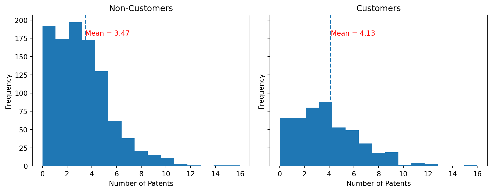
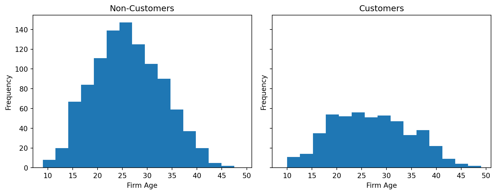
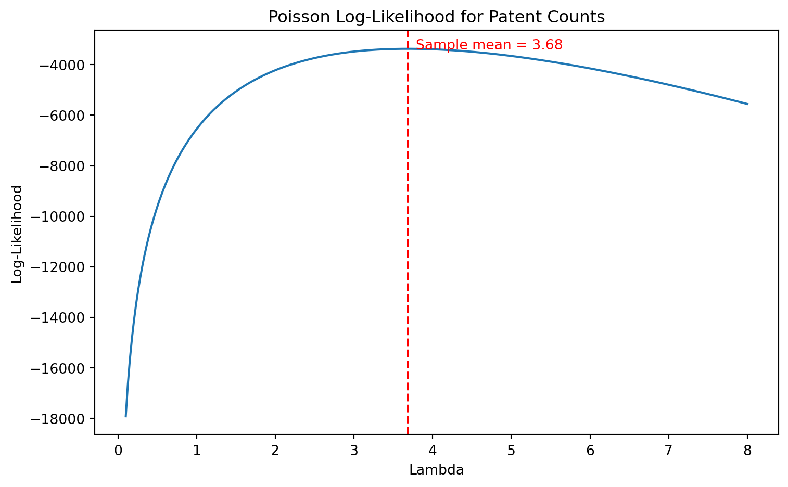

Poisson Regression and Maximum Likelihood Estimation
A Case Study of Blueprinty’s Software and Patent Awards
Introduction
Blueprinty is a small software company that helps engineering firms prepare and submit patent applications to the U.S. Patent Office. Naturally, their marketing team would like to make a compelling claim: firms that use Blueprinty’s software are more successful in getting their patents approved.
At first, this might sound like a straightforward question—just compare the number of patents between firms that use the software and those that don’t. But in practice, things are more complicated.
In an ideal world, we would observe the same firms both before and after they started using Blueprinty’s software. That would allow us to directly measure how their outcomes changed. Unfortunately, we don’t have that kind of data here.
Instead, we are given a cross-sectional dataset of around 1,500 mature engineering firms. For each firm, we observe the number of patents awarded over the past five years, the firm’s region, its age, and whether or not it uses Blueprinty’s software.
The challenge is that firms are not randomly assigned to use the software. Companies that adopt Blueprinty may already be different—for example, they could be larger, more experienced, or located in regions with stronger innovation ecosystems. Because of this, simply comparing patent counts between users and non-users may reflect these underlying differences rather than the true impact of the software.
To address this, we will use a Poisson regression model and estimate it via maximum likelihood. This approach allows us to model patent counts while accounting for observable firm characteristics, helping us better isolate the relationship between software usage and patent outcomes.
Exploring the Data
Before jumping into modeling, it is helpful to take a closer look at the data. In particular, we want to understand how customers and non-customers differ, and whether those differences might affect patent outcomes.
Patent Distribution by Customer Status
Customers have a slightly higher average number of patents (4.13 vs. 3.47). That said, the two groups overlap quite a bit, so the difference is not very sharp. This suggests that while customers seem to perform better on average, we can’t conclude that the software alone is driving the difference.
Region Distribution by Customer Status
| iscustomer | 0 | 1 |
|---|---|---|
| region | ||
| Midwest | 0.183513 | 0.076923 |
| Northeast | 0.267910 | 0.681913 |
| Northwest | 0.155054 | 0.060291 |
| South | 0.153091 | 0.072765 |
| Southwest | 0.240432 | 0.108108 |
Customers are heavily concentrated in the Northeast, while non-customers are more evenly distributed across regions. This suggests that customer adoption is not random and may be influenced by geographic factors. As a result, differences in patent outcomes could partly reflect regional differences rather than the effect of the software itself.
Firm Age by Customer Status

The age distributions of customers and non-customers look fairly similar overall, but there are some noticeable differences. Customers tend to be slightly more concentrated in the mid-age range, while non-customers appear to be a bit more spread out.
This suggests that firms using Blueprinty’s software may differ somewhat in terms of maturity. Even if the difference is not dramatic, it still means that age could be a factor influencing patent outcomes.
Because of this, we should be careful not to attribute differences in patent counts solely to software usage, since part of the difference could be related to firm age.
Overall
Taken together, these patterns suggest that customers and non-customers differ in several important ways, including patent outcomes, geographic distribution, and firm age.
Because of these systematic differences, a simple comparison between the two groups would be misleading. Any observed gap in patent counts could be driven not only by software usage, but also by underlying firm characteristics.
This highlights the need for a more careful modeling approach that accounts for these factors, which we will address using Poisson regression in the next section.
A Simple Poisson Model via Maximum Likelihood
The outcome we care about is the number of patents awarded to each firm over the last five years. Since this is a count variable, it cannot be negative and it only takes integer values like 0, 1, 2, and so on. Because of that, a Normal distribution would not be a natural fit. A Poisson distribution is a better starting point for modeling this kind of outcome.
For this simple version, we assume each firm’s patent count is drawn from the same Poisson distribution:
\[ Y_i \sim \text{Poisson}(\lambda) \]
Here, () represents the expected number of patents for a firm.
For one firm, the Poisson probability mass function is:
\[ f(Y_i \mid \lambda) = \frac{e^{-\lambda}\lambda^{Y_i}}{Y_i!} \]
Because we observe many firms, the joint likelihood is the product of the individual probabilities:
\[ L(\lambda \mid Y) = \prod_{i=1}^{n} \frac{e^{-\lambda}\lambda^{Y_i}}{Y_i!} \]
Taking logs gives the log-likelihood:
\[ \ell(\lambda \mid Y) = \sum_{i=1}^{n} \left( -\lambda + Y_i \log(\lambda) - \log(Y_i!) \right) \]
The goal of maximum likelihood estimation is to find the value of () that makes the observed patent counts most likely.
Log-likelihood function & graph
import numpy as np
import pandas as pd
import matplotlib.pyplot as plt
from scipy.special import gammaln
from scipy.optimize import minimize_scalar
df = pd.read_csv("blueprinty.csv")
Y = df["patents"].to_numpy()
def poisson_loglikelihood(lam, Y):
if lam <= 0:
return -np.inf
return np.sum(-lam + Y * np.log(lam) - gammaln(Y + 1))
As λ increases, the log-likelihood first rises, reaches a peak, and then starts to decline. The highest point of the curve represents the value of λ that best fits the observed patent counts.
In this case, the peak lines up closely with the sample mean (about 3.68), which is shown by the red dashed line. This is consistent with what we expect for a Poisson model, where the maximum likelihood estimate of λ corresponds to the average number of observed counts.
Intuitively, this suggests that the value of λ that makes the data most “plausible” is simply the overall average patent count in the sample.
Finding the MLE Numerically
The plot gives us a visual sense of where the best value of () is, but we can also find it directly using numerical optimization. Since scipy.optimize.minimize_scalar() minimizes a function, I minimize the negative log-likelihood, which is the same as maximizing the log-likelihood.
result = minimize_scalar(
lambda lam: -poisson_loglikelihood(lam, Y),
bounds=(0.001, 20),
method="bounded"
)
lambda_mle = result.x
print(f"Numerical MLE for lambda: {lambda_mle:.4f}")
print(f"Sample mean of patents: {sample_mean:.4f}")Numerical MLE for lambda: 3.6847
Sample mean of patents: 3.6847The numerical MLE is essentially the same as the sample mean. This is exactly what we expect for a simple Poisson model: the best estimate of (), the average rate of patents, is just the average number of patents observed in the data.
Why the MLE Equals the Sample Mean
We can also see this result from the log-likelihood itself. Starting from the log-likelihood,
\[ \ell(\lambda \mid Y) = \sum_{i=1}^{n} \left( -\lambda + Y_i \log(\lambda) - \log(Y_i!) \right) \]
we take the derivative with respect to ():
\[ \frac{\partial \ell}{\partial \lambda} = \sum_{i=1}^{n} \left( -1 + \frac{Y_i}{\lambda} \right) \]
Then we set the derivative equal to zero:
\[ \sum_{i=1}^{n} \left( -1 + \frac{Y_i}{\lambda} \right) = 0 \]
This simplifies to:
\[ -n + \frac{\sum_{i=1}^{n}Y_i}{\lambda} = 0 \]
Solving for (), we get:
\[ \hat{\lambda}_{MLE} = \frac{1}{n}\sum_{i=1}^{n}Y_i = \bar{Y} \]
So the MLE for () is the sample mean. This result makes intuitive sense: if we are using one Poisson distribution to describe all firms, the best single estimate of the patent rate is the overall average number of patents. This simple model is useful as a starting point, but it treats every firm as if it has the same expected patent count. In the next model, we will make this more realistic by allowing expected patent counts to vary based on customer status, region, and firm age.
Poisson Regression
The simple Poisson model above assumes that every firm has the same expected number of patents. That is a useful starting point, but it is probably too simple. In reality, firms may differ by age, region, and whether or not they use Blueprinty’s software.
To allow each firm to have its own expected patent count, we extend the model to a Poisson regression:
\[ Y_i \sim \text{Poisson}(\lambda_i) \qquad \text{where} \qquad \lambda_i = \exp(X_i\beta) \]
The exponential function is important here because (_i) must always be positive. The linear part, (X_i), can be any real number, but after applying (()), the predicted patent rate is guaranteed to stay above zero.
import numpy as np
import pandas as pd
from scipy.optimize import minimize
import statsmodels.api as sm
df = pd.read_csv("blueprinty.csv")
# Create age squared
df["age_squared"] = df["age"] ** 2
# Create region dummy variables and drop one region as the reference group
region_dummies = pd.get_dummies(df["region"], prefix="region", drop_first=True)
# Build X matrix
X_df = pd.concat(
[
pd.Series(1, index=df.index, name="intercept"),
df[["age", "age_squared", "iscustomer"]],
region_dummies
],
axis=1
)
Y = df["patents"].to_numpy()
X = X_df.to_numpy(dtype=float)
X_df.head()| intercept | age | age_squared | iscustomer | region_Northeast | region_Northwest | region_South | region_Southwest | |
|---|---|---|---|---|---|---|---|---|
| 0 | 1 | 32.5 | 1056.25 | 0 | False | False | False | False |
| 1 | 1 | 37.5 | 1406.25 | 0 | False | False | False | True |
| 2 | 1 | 27.0 | 729.00 | 1 | False | True | False | False |
| 3 | 1 | 24.5 | 600.25 | 0 | True | False | False | False |
| 4 | 1 | 37.0 | 1369.00 | 0 | False | False | False | True |
The table above shows the design matrix used for the Poisson regression. It includes an intercept term, firm age, age squared, customer status, and region indicators. The region variables are converted into dummy variables, with one region omitted as the reference group to avoid perfect collinearity. As a result, each region coefficient should be interpreted relative to the omitted baseline region. Including both age and age squared allows the model to capture potential non-linear effects of firm age on patent outcomes, rather than forcing a strictly linear relationship.
def poisson_regression_loglikelihood(beta, Y, X):
eta = np.clip(X @ beta, -20, 20)
lam = np.exp(eta)
return np.sum(Y * eta - lam - gammaln(Y + 1))
def negative_loglikelihood(beta, Y, X):
return -poisson_regression_loglikelihood(beta, Y, X)
initial_beta = np.zeros(X.shape[1])
result = minimize(
negative_loglikelihood,
initial_beta,
args=(Y, X),
method="BFGS"
)
beta_hat = result.x
hessian_inv = result.hess_inv
standard_errors = np.sqrt(np.diag(hessian_inv))
mle_results = pd.DataFrame({
"Coefficient": beta_hat,
"Std. Error": standard_errors
}, index=X_df.columns)
mle_results| Coefficient | Std. Error | |
|---|---|---|
| intercept | -0.509956 | 0.193053 |
| age | 0.148702 | 0.014461 |
| age_squared | -0.002972 | 0.000266 |
| iscustomer | 0.207600 | 0.032935 |
| region_Northeast | 0.029159 | 0.046769 |
| region_Northwest | -0.017578 | 0.057230 |
| region_South | 0.056566 | 0.056244 |
| region_Southwest | 0.050589 | 0.049642 |
The positive coefficient on iscustomer suggests that Blueprinty customers tend to produce more patents than comparable non-customers, even after controlling for firm age and region. The age terms indicate that patent activity increases with firm age, but at a decreasing rate, meaning the effect of age becomes weaker for more mature firms. The region effects appear relatively small compared to the customer effect, suggesting that location plays a secondary role in explaining patent output. Thus, the results highlight that both firm characteristics and software usage are important in explaining patent outcomes, and simple comparisons would miss these underlying differences.
glm_model = sm.GLM(Y, X, family=sm.families.Poisson())
glm_result = glm_model.fit()
glm_results = pd.DataFrame({
"MLE Coefficient": beta_hat,
"MLE Std. Error": standard_errors,
"GLM Coefficient": glm_result.params,
"GLM Std. Error": glm_result.bse
}, index=X_df.columns)
glm_results.round(4)| MLE Coefficient | MLE Std. Error | GLM Coefficient | GLM Std. Error | |
|---|---|---|---|---|
| intercept | -0.5100 | 0.1931 | -0.5089 | 0.1832 |
| age | 0.1487 | 0.0145 | 0.1486 | 0.0139 |
| age_squared | -0.0030 | 0.0003 | -0.0030 | 0.0003 |
| iscustomer | 0.2076 | 0.0329 | 0.2076 | 0.0309 |
| region_Northeast | 0.0292 | 0.0468 | 0.0292 | 0.0436 |
| region_Northwest | -0.0176 | 0.0572 | -0.0176 | 0.0538 |
| region_South | 0.0566 | 0.0562 | 0.0566 | 0.0527 |
| region_Southwest | 0.0506 | 0.0496 | 0.0506 | 0.0472 |
The coefficients obtained from the manual MLE closely match those from the statsmodels GLM, which provides a useful validation of the implementation. The small differences we see are likely due to numerical optimization and how the Hessian is approximated in each method. So, the results are consistent across both approaches, which gives confidence that the model has been correctly specified and estimated.
Customer coefficient: 0.2076
exp(customer coefficient): 1.2307
Percent difference: 23.1%The exponentiated customer coefficient is about 1.23, which means that, holding age and region constant, Blueprinty customers are expected to produce roughly 23% more patents than comparable non-customers. This is a fairly meaningful difference, especially given that we are already controlling for other firm characteristics. While this does not establish a causal effect, it suggests a strong positive association between using Blueprinty’s software and patent output. In the simple model, all firms were assumed to have the same expected number of patents, which is clearly unrealistic. In practice, firms differ in important ways, such as their age, location, and whether they use Blueprinty’s software. To capture these differences, we extend the model so that each firm has its own expected patent rate, determined by its characteristics. This is done by modeling the rate parameter as an exponential function of observed features, which ensures that predicted patent counts remain positive.
The Effect of Blueprinty’s Software
The customer coefficient from the Poisson regression is useful, but it is not as easy to interpret as a regular linear regression coefficient. Since the model works through an exponential function, the coefficient tells us about a multiplicative change in the expected patent count, not a simple “add this many patents” effect.
To make the result easier to understand, I use a counterfactual approach. I keep every firm’s age and region exactly the same, but I change the customer status in two different versions of the data:
- in one version, every firm is treated as a non-customer;
- in the other version, every firm is treated as a Blueprinty customer.
Then I use the fitted model to predict the expected number of patents in both cases and compare the averages.
# Copy the design matrix twice
X_0 = X_df.copy()
X_1 = X_df.copy()
# Counterfactual 1: treat every firm as a non-customer
X_0["iscustomer"] = 0
# Counterfactual 2: treat every firm as a Blueprinty customer
X_1["iscustomer"] = 1
# Convert to numpy arrays
X_0_np = X_0.to_numpy(dtype=float)
X_1_np = X_1.to_numpy(dtype=float)
# Predict expected patent counts under both scenarios
yhat_0 = np.exp(np.clip(X_0_np @ beta_hat, -20, 20))
yhat_1 = np.exp(np.clip(X_1_np @ beta_hat, -20, 20))
# Average counterfactual effect
avg_yhat_0 = yhat_0.mean()
avg_yhat_1 = yhat_1.mean()
avg_effect = (yhat_1 - yhat_0).mean()
effect_results = pd.DataFrame({
"Scenario": ["Everyone treated as non-customer", "Everyone treated as customer"],
"Average predicted patents": [avg_yhat_0, avg_yhat_1]
})
effect_results| Scenario | Average predicted patents | |
|---|---|---|
| 0 | Everyone treated as non-customer | 3.436199 |
| 1 | Everyone treated as customer | 4.229002 |
print(f"Average predicted patents if all firms are non-customers: {avg_yhat_0:.3f}")
print(f"Average predicted patents if all firms are customers: {avg_yhat_1:.3f}")
print(f"Estimated average effect of Blueprinty customer status: {avg_effect:.3f} patents")Average predicted patents if all firms are non-customers: 3.436
Average predicted patents if all firms are customers: 4.229
Estimated average effect of Blueprinty customer status: 0.793 patentsTo make the model results easier to interpret, I compared two counterfactual scenarios. In the first one, I treated every firm as a non-customer, and in the second, I treated every firm as if it used Blueprinty’s software, while keeping age and region unchanged.This means the comparison is not simply customers versus non-customers in the raw data; it is comparing the same firms under two different customer status assumptions. The model predicts an average of about 3.44 patents when every firm is treated as a non-customer, compared with about 4.23 patents when every firm is treated as a Blueprinty customer. The gap is about 0.79 patents per firm. Because age and region are held fixed in this comparison, this difference is a model-based estimate of the association between customer status and patent output, rather than just a raw comparison of the two groups. This suggests that, on average, being a Blueprinty customer is associated with a higher patent output, even after accounting for differences in firm age and region. In other words, the software appears to be linked to a meaningful increase in patent activity. That said, this result should be interpreted with caution. Since the data is observational rather than experimental, we cannot fully rule out the possibility that customers differ from non-customers in other unobserved ways. So while the findings are consistent with Blueprinty’s claim, they do not prove a causal effect.